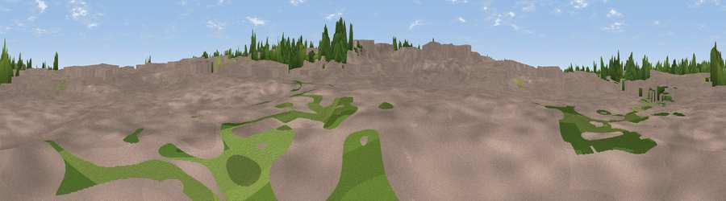

Viewpoint near Norton
#46310 in England · top 100% of its area beats it · near NortonWhere it is
The exact computed spot (TL 23149 33069). Click the marker for map links.
The view, rendered

A 360° render of this exact spot computed from the terrain model, tree cover and land cover — summer colours, afternoon light, calibrated against photographs of famous viewpoints. Real trees, hedges and buildings will differ in detail.
The panorama
Grey silhouette: terrain skyline in each direction (720 bearings, Earth curvature and refraction included). Dashed green: skyline with trees (+15 m) and buildings (+8 m) as obstacles. Blue strip: how far the ground is visible on each bearing.
Where the view opens
Wedge length = distance to the farthest visible ground on that bearing (vegetation-aware). Rings at 10, 25 and 50 km.
What fills the view
72% built-up · 16% woodland · 7% cropland · 5% grassland
Angular shares of the visible panorama (visual magnitude), not map area. Landscape diversity 0.38 (0–1 Shannon).
Key numbers
More beautiful places nearby
The staircase of upgrades: each row has a higher view potential than everything closer. Driving times are estimates from straight-line distance, calibrated against real road routing — check an actual route before setting out.
| Place | Direction | Drive | Score |
|---|---|---|---|
| Viewpoint near Baldock | ESE · 2 km | ~5 min | 24.1 |
| Viewpoint near Baldock | ESE · 2 km | ~5 min | 53.7 |
| Viewpoint near Great Offley | WSW · 10 km | ~20 min | 54.4 |
| Viewpoint near Hexton | WSW · 11 km | ~21 min | 65.4 |
| Beacon Hill | WSW · 32 km | ~49 min | 74.1 |
| Viewpoint near Halton | WSW · 41 km | ~61 min | 74.3 |
| Coombe Hill Monument | WSW · 46 km | ~67 min | 75.5 |
| Viewpoint near Woolstone | WSW · 104 km | ~129 min | 76.7 |
51.98244, -0.20824 · source: osm viewpoint · position refined by local search. Computed location — check access rights before visiting.